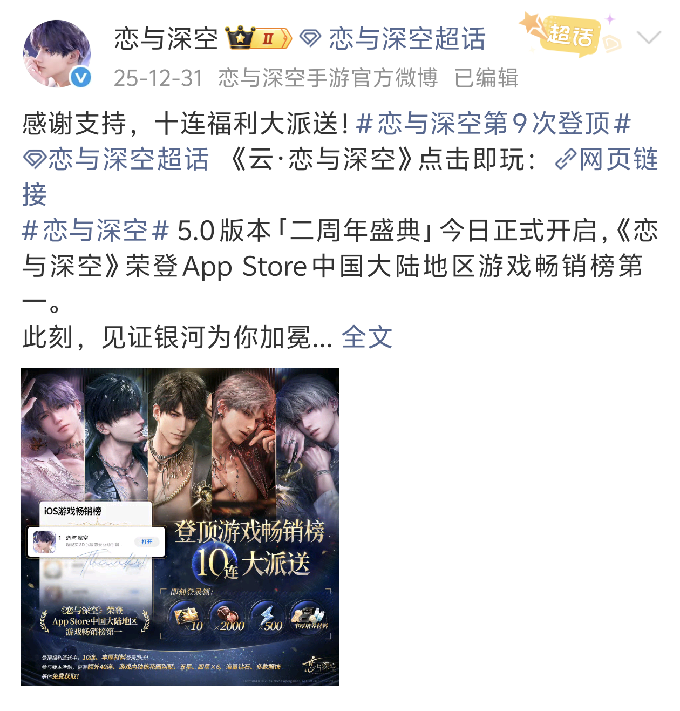
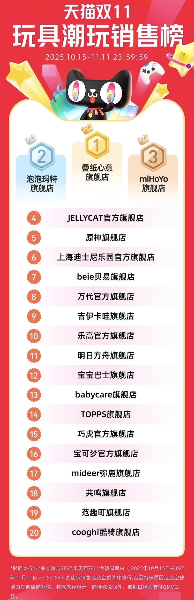

PAY FOR LOVE
为爱买单
《恋与深空》女性玩家的符号消费图鉴
一张卡牌价值多少？
纸片人为何让无数女性着迷？
《恋与深空》女性玩家的符号消费图鉴
一张卡牌价值多少？
纸片人为何让无数女性着迷？
2024年《恋与深空》上线即破圈，
成为现象级女性向手游。
无数女性玩家为纸片人们投入真金白银。
她们在消费什么？
为何而买？


叠纸心意为《恋与深空》官方周边售卖店铺,在2025年天猫双11期间登上玩具潮玩销售榜榜一,销售额突破千万,打败泡泡玛特、miHoYo、JELLYCAT等知名潮玩店铺。
玩家以18至29岁的年轻女性为主，占比接近九成。
其中，学生群体是符号消费最活跃的先锋力量。职场女性经济独立，消费更稳定，使市场更加成熟。
年轻女性成为游戏消费的主力军，她们对虚拟情感的投入正在重塑游戏产业格局。
游玩时间小于三个月的玩家大多消费在499元以下，而游玩1年以上的玩家，近四成消费超过5000元。
总体来看，游戏时间越长，消费总金额越高。
虚拟抽卡（限定卡池权重2.56）是游戏内的核心消费内容，是情感符号的核心载体；而游戏外的消费是情感符号向现实的延伸—— 符号消费已超出物品使用价值的范围，转变为以获取情感、建立身份认同为中心的符号实践。。
数据显示，情感性动因是最强烈的，显著高于社会性动因和游戏性动因。
游戏角色形象与剧情互动高度贴合玩家对理想伴侣的想象，抽到角色卡牌时会产生“被角色偏爱”的独特联结，这是消费最核心的驱动力。现实生活中感到孤独、压力大或情绪低落时，玩家通过消费能获得情绪慰藉与陪伴，明显改善心情。
对角色卡牌收集、游戏资源获取的追求，形成了稳定持续的消费行为。社会性动因的作用相对较弱，玩家虽会因他人分享而“被种草”，但消费可能受到社群氛围裹挟，从悦己异化为自证的攀比，带来焦虑、后悔等负面情绪。
从玩家访谈和问卷留言中提取的高频词汇
“周边”、“喜欢”、“爱”、“开心”、“情绪价值”等正向词汇占据绝对数量优势，说明玩家消费的核心驱动力是获取情感慰藉与陪伴感—— 她们在虚拟关系中寻找被坚定选择的确定感，通过购买周边将这份情感连接进现实生活。
与此同时，“压力”、“后悔”、“焦虑”等负向词汇，揭示了符号消费的另一面：小额高频的付费机制削弱了玩家对金钱的敏感度，社群中的攀比氛围则可能让消费从“悦己”异化为“自证”。
而“现实”、“社区”、“金钱”等中性高频词，则折射出玩家始终在虚拟游戏与真实生活之间有着清醒的认知—— 她们并非沉溺幻想，而是在游戏中被治愈后，带着这份力量回归现实。
前面提到“限定”、“保底”、“错失恐惧”如何驱动消费，现在，请你亲自体验。 你只有50秒，10次机会，点击开始抽卡，倒计时则开始。看看你需要几次机会抽出五星卡呢？ 这是玩家都经历过的真实游戏消费情境。
👇 点击下方按钮，感受抽卡的刺激！
点击下方数字卡片，查看总结词语！
在花钱买快乐与花钱后的罪恶感之间反复横跳。
孤独时获得陪伴，压力时找到出口。
角色拉高情感期待，但让人看清真正渴望的亲密关系。
爱是多元表达，攀比消费只会让“悦己”沦为“自证”。
尽管多数玩家表示会理性消费，但也存在被游戏厂商的营销手段诱导消费产生后悔焦虑等负面情绪。
总体上，多数玩家认为这种消费带来的情绪价值是值得的。因此如何在享受游戏的同时保持理性消费，成为玩家面临的重要课题。
250份问卷，6位玩家的真实讲述，数以万计的氪金记录——这些数字背后，是一个个鲜活的女性。她们在游戏中练习爱与被爱，在虚拟角色的注视下确认“我值得被温柔对待”。 她们不是“人傻钱多”，而是用金钱为理想中的亲密关系投出的选票。她们清醒地知道，完美人设不存在于现实；她们诚实地承认，被坚定选择的感觉，是理想中爱情的模样。
“为爱买单”从来不是问题。在享受虚拟世界带来的情感满足时，也要多关注现实生活中的情感连接。理性消费，享受游戏，才是健康的游戏态度。
愿你在为爱付费之后，仍然拥有感知真实温度的能力。愿你的每一次消费，都是出于喜欢，而不是恐惧错过。
现在，你怎么看待为纸片人花钱这件事呢？欢迎在下方留言区分享你的想法！